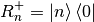
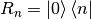
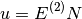
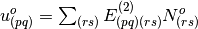
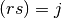

Response¶
Linear-Transformation¶
The combined triplet and singlet one-body operator:

With  being
being  for singlet and for triplet. The general two-body operator can be written as:
for singlet and for triplet. The general two-body operator can be written as:
Now some matrices can be defined:

Here the submatricies are given as:
The Hamiltonian is given as:
 is the state transfer oprators that takes to
is the state transfer oprators that takes to  :
:


Here have to be different from . Atlast the orbital operators  are given as:
are given as:
Here . Now for the triplet response the goal is to solve the response equations:
Here the matricies  and are given above.
and are given above.  is the eigenvalues corrosponding to the singlet-triplet excitation energies. is the corrosponding eigenvectors. And:
is the eigenvalues corrosponding to the singlet-triplet excitation energies. is the corrosponding eigenvectors. And:
Here will corrospond to the frequency of an external perturbation. These equation can be solved by an iterative procedure, by making a linear transformation:

Here  is a trailvector. Now to solve the equations the trailvectors is needed. The trail vector can be considered as two vectors:
is a trailvector. Now to solve the equations the trailvectors is needed. The trail vector can be considered as two vectors:
and,
The orbital vector can be considered as a matrix constructed as:
Now lets consider, the linear transformation of . can be thought of as a 4x4 matrix, as a four long vector. Now the first element from this linear transformation is found to be:
Here and . Now this can be rewritten as:
Here it is used that  is just a number, and only one of the terms depends on
is just a number, and only one of the terms depends on  . Now:
. Now:
Now by using the definition of the one-index transformed Hamiltonian:
The minus is from . Now the second element:
Following the same procedure:
Having , now gives:
The third term:
![u_{3}^{o}=\sum_{j}\left(\left(\left\langle 0\left|\left[q_{i},\left[H_{0},q_{j}\right]\right]\right|0\right\rangle \right)^{*}\kappa_{j}+\left(\left\langle 0\left|\left[q_{i},\left[H_{0},q_{j}^{+}\right]\right]\right|0\right\rangle \right)^{*}\kappa_{j}'\right)](_images/math/eeb1140d6032590e84961ed806806250c66c6d32.png)
Following the same procedure and using :
Now the fourth term:
Gives:
Here it is used that, . Now in summary giving:
Now consider the linear transformation of . First:
It can now be introduced that:
Using the above:
Following the same method it can be found that:
![u^{c}=-\left(\begin{array}{c}
\left\langle 0^{L}\left|\left[q_{i},H_{0}\right]\right|0\right\rangle +\left\langle 0\left|\left[q_{i},H_{0}\right]\right|0^{R}\right\rangle \\
\left\langle i\left|H_{0}\right|0^{R}\right\rangle +\left\langle 0\left|H_{0}\right|0\right\rangle S\\
\left\langle 0^{L}\left|\left[q_{i}^{\dagger},H_{0}\right]\right|0\right\rangle +\left\langle 0\left|\left[q_{i}^{\dagger},H_{0}\right]\right|0^{R}\right\rangle \\
-\left\langle 0^{L}\left|H_{0}\right|i\right\rangle +\left\langle 0\left|H_{0}\right|0\right\rangle S'
\end{array}\right)](_images/math/fdd6ff63f5ac7df7f06c2448bd382ddc3eff90ef.png)
In a similar way the linear transformation of can be made to find:
and,